library(childesr)Essential Statistics
Philosophical Foundations
In scientific research
The main question being answered, problem being solved, or claim being verified or falsified should guide the decisions in research, including all decisions regarding data collection and analysis.
So first we need to write down the specific research question, problem, or claim that our research is going to grapple with.
Popper’s crucial tests/experiments
Randomness
Summary statistics loses information regarding individuals. researchers often incorrectly then use them to infer information about individuals.
Data-bias
Data
https://langcog.github.io/childes-db-website/api.html
Providence_tokens <- get_tokens(collection = "Eng-NA",
language = "English",
corpus = "Providence",
token = "*")Using current database version: '2021.1'.Could not connect to childes-dbProvidence_utterances <- get_utterances(collection = "Eng-NA",
language = "English",
corpus = "Providence")Using current database version: '2021.1'.
Could not connect to childes-dbVisualization
Distributions
library(ggplot2)Uniform Distribution
Every value between a and b is equally likely.
\[f(x) = \frac{1}{b - a} \quad \text{for } a \le x \le b\]
x <- seq(-0.5, 1.5, length.out = 200)
df <- data.frame(x, y = dunif(x, min = 0, max = 1))
ggplot(df, aes(x, y)) + geom_line() + labs(x = "Value", y = "Density")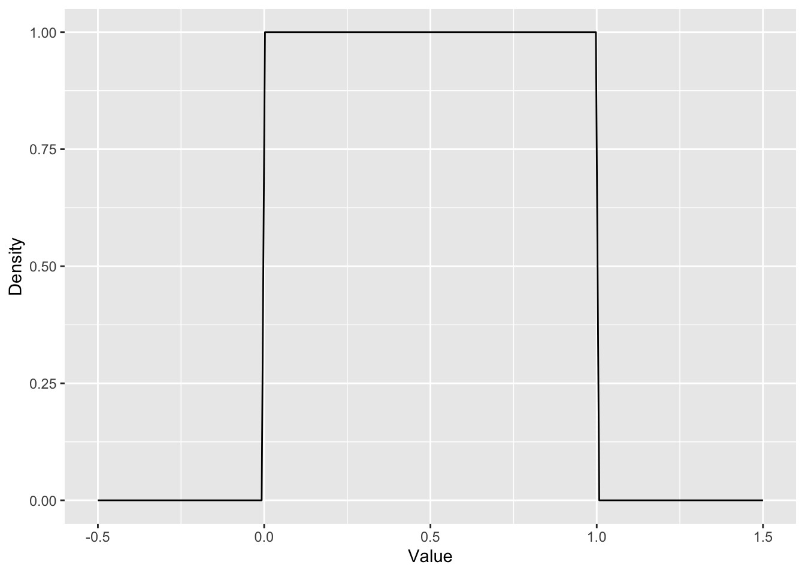
Linear Distribution
A distribution whose PDF is a linear function on \([0, 1]\). For the density to be valid it must integrate to 1, requiring \(\frac{a}{2} + b = 1\), and remain non-negative on the interval.
\[f(x) = ax + b \quad \text{for } 0 \le x \le 1, \quad \frac{a}{2} + b = 1\]
a <- 1.6; b <- 1 - a / 2
x <- seq(0, 1, length.out = 200)
df <- data.frame(x, y = a * x + b)
ggplot(df, aes(x, y)) + geom_line() + labs(x = "Value", y = "Density")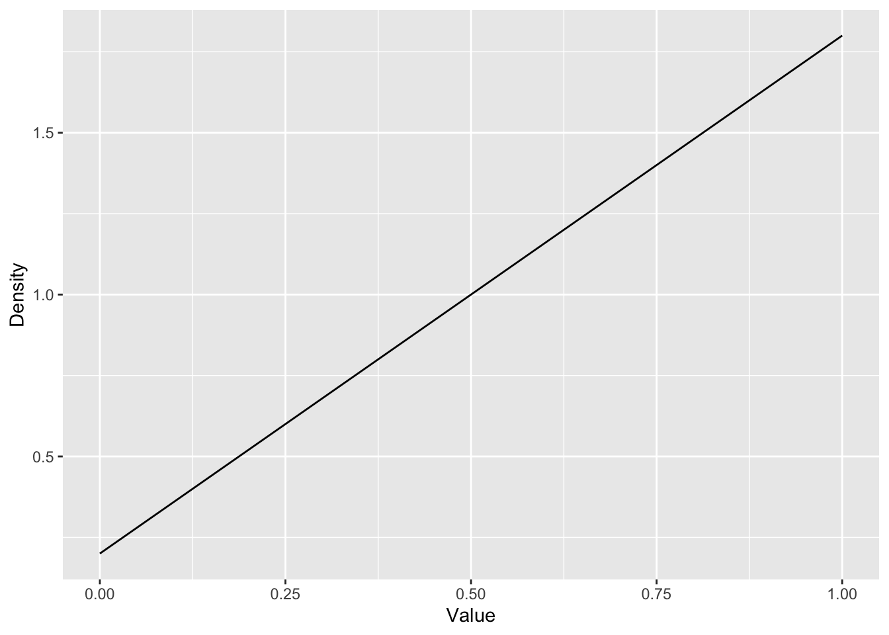
Binomial Distribution
Models the number of successes in n independent trials, each with probability p.
\[P(X = k) = \binom{n}{k} p^k (1-p)^{n-k}\]
x <- 0:10
df <- data.frame(x, y = dbinom(x, size = 10, prob = 0.5))
ggplot(df, aes(x, y)) + geom_col() + labs(x = "Successes", y = "Probability")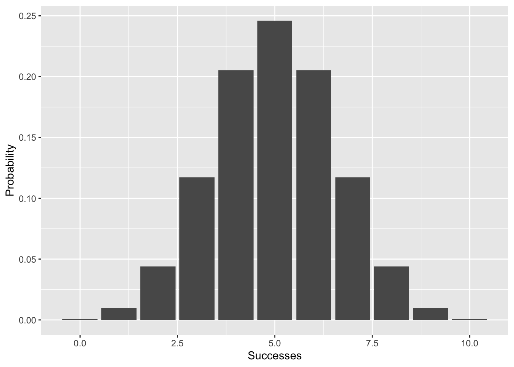
Multinomial Distribution
Generalizes the binomial to n trials where each trial can result in one of k categories, each with probability \(p_i\).
\[P(X_1 = x_1, \ldots, X_k = x_k) = \frac{n!}{x_1! \cdots x_k!} \, p_1^{x_1} \cdots p_k^{x_k}\]
counts <- as.vector(rmultinom(1, size = 100, prob = c(0.2, 0.5, 0.3)))
df <- data.frame(category = c("A", "B", "C"), count = counts)
ggplot(df, aes(category, count)) +
geom_col() + labs(x = "Category", y = "Count")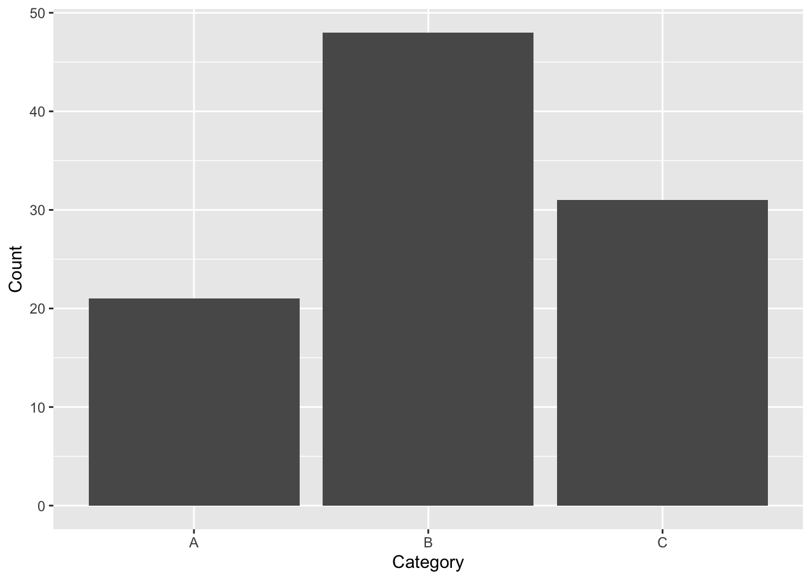
Normal Distribution
Symmetric bell curve defined by a mean \(\mu\) and standard deviation \(\sigma\).
\[f(x) = \frac{1}{\sigma\sqrt{2\pi}} e^{-\frac{1}{2}\left(\frac{x-\mu}{\sigma}\right)^2}\]
x <- seq(-4, 4, length.out = 200)
df <- data.frame(x, y = dnorm(x))
ggplot(df, aes(x, y)) + geom_line() + labs(x = "Value", y = "Density")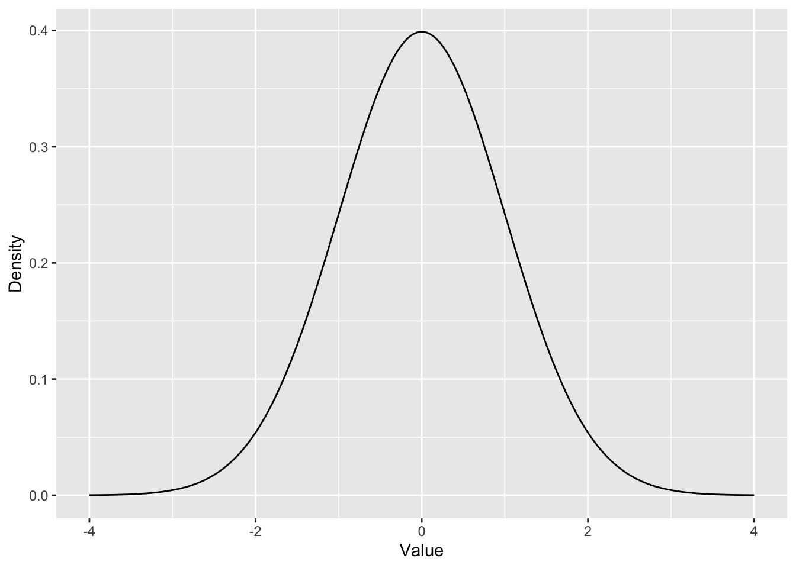
Poisson Distribution
Models the count of events occurring at a constant average rate \(\lambda\) over an interval.
\[P(X = k) = \frac{\lambda^k e^{-\lambda}}{k!}\]
x <- 0:15
df <- data.frame(x, y = dpois(x, lambda = 4))
ggplot(df, aes(x, y)) + geom_col() + labs(x = "Events", y = "Probability")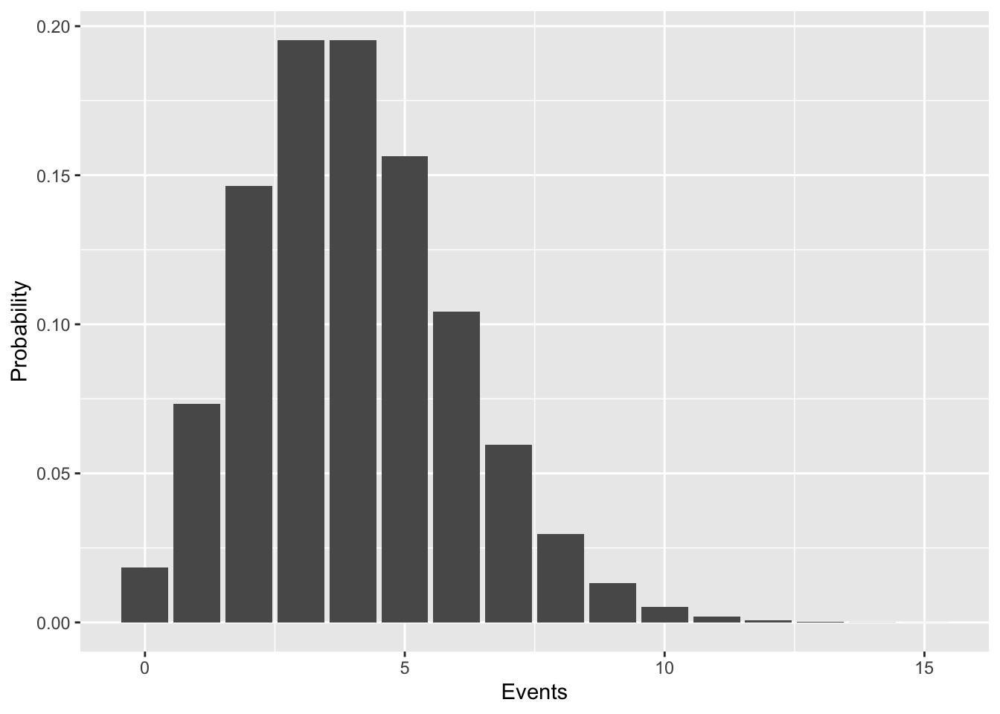
Negative Binomial Distribution
Models the number of failures before the r-th success in a sequence of independent trials with success probability p.
\[P(X = k) = \binom{k + r - 1}{k}(1-p)^k p^r\]
x <- 0:20
df <- data.frame(x, y = dnbinom(x, size = 5, prob = 0.4))
ggplot(df, aes(x, y)) + geom_col() + labs(x = "Failures", y = "Probability")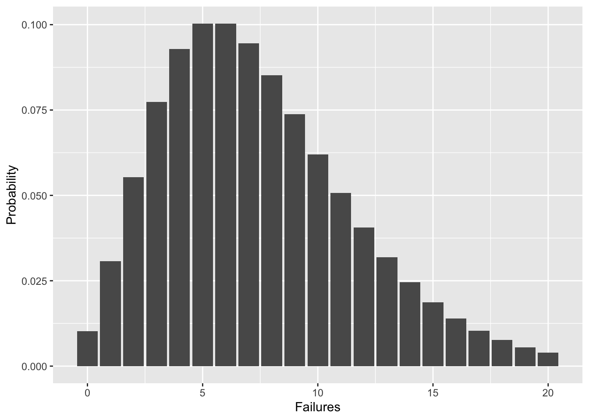
Student’s t Distribution
Used for inference about means when the sample size is small or the population variance is unknown. Heavier tails than the normal; approaches normal as \(\nu \to \infty\).
\[f(x) = \frac{\Gamma\!\left(\frac{\nu+1}{2}\right)}{\sqrt{\nu\pi}\,\Gamma\!\left(\frac{\nu}{2}\right)} \left(1+\frac{x^2}{\nu}\right)^{-\frac{\nu+1}{2}}\]
x <- seq(-5, 5, length.out = 200)
df <- data.frame(x, y = dt(x, df = 5))
ggplot(df, aes(x, y)) + geom_line() + labs(x = "Value", y = "Density")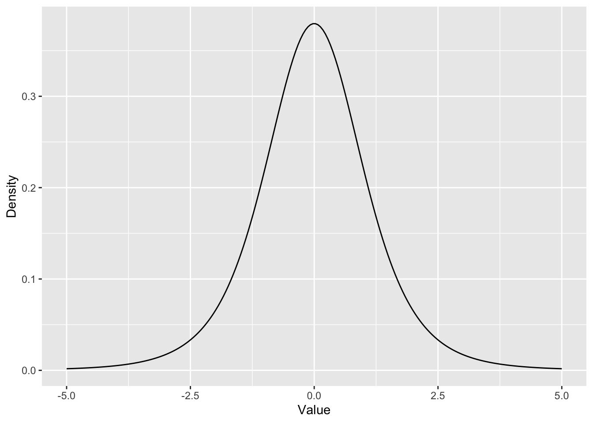
Log-Normal Distribution
A variable whose logarithm follows a normal distribution. Used to model positive-valued, right-skewed quantities.
\[f(x) = \frac{1}{x\sigma\sqrt{2\pi}}\, e^{-\frac{(\ln x - \mu)^2}{2\sigma^2}}\]
x <- seq(0.01, 5, length.out = 200)
df <- data.frame(x, y = dlnorm(x, meanlog = 0, sdlog = 0.6))
ggplot(df, aes(x, y)) + geom_line() + labs(x = "Value", y = "Density")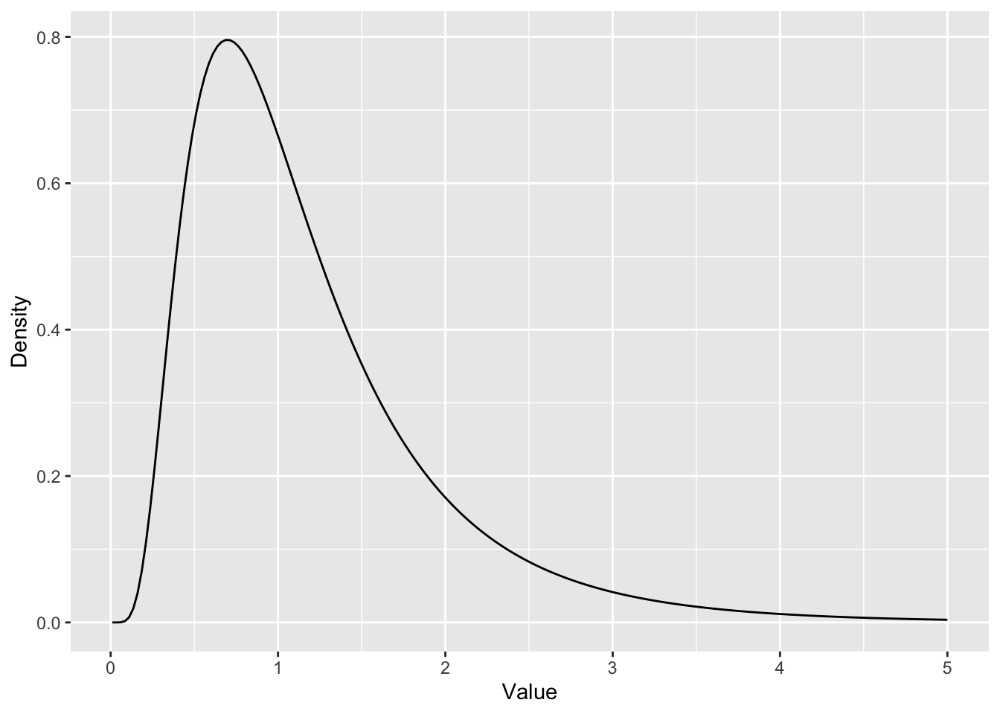
Gamma Distribution
Generalizes the exponential distribution to model waiting times for multiple events. Parameterized by shape \(\alpha\) and rate \(\beta\).
\[f(x) = \frac{\beta^\alpha}{\Gamma(\alpha)}\, x^{\alpha-1} e^{-\beta x}\]
x <- seq(0, 15, length.out = 200)
df <- data.frame(x, y = dgamma(x, shape = 3, rate = 0.5))
ggplot(df, aes(x, y)) + geom_line() + labs(x = "Value", y = "Density")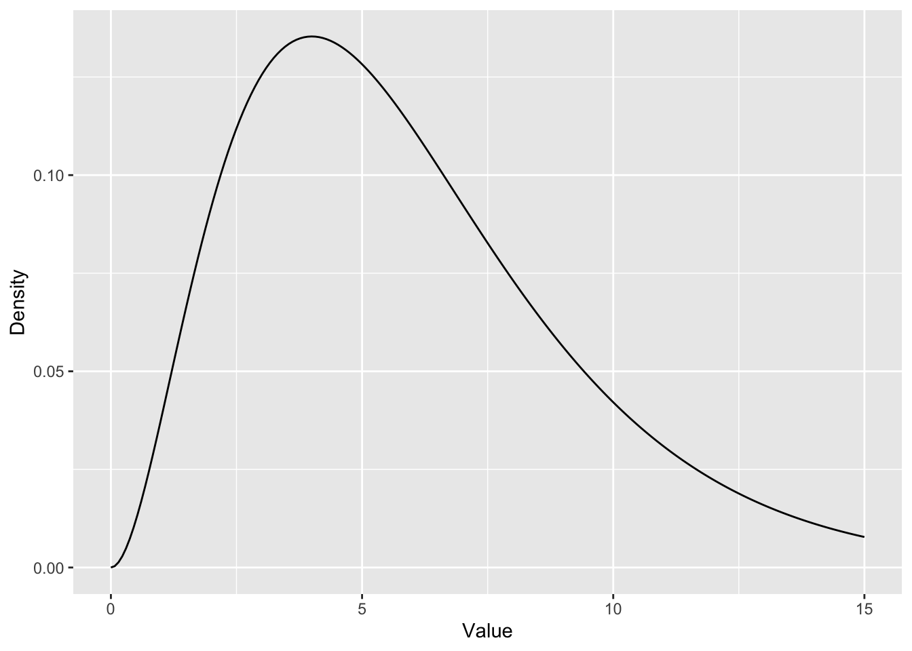
Beta Distribution
Models probabilities or proportions; defined on \([0, 1]\) and shaped by parameters \(\alpha\) and \(\beta\).
\[f(x) = \frac{x^{\alpha-1}(1-x)^{\beta-1}}{B(\alpha,\beta)}\]
x <- seq(0, 1, length.out = 200)
df <- data.frame(x, y = dbeta(x, shape1 = 2, shape2 = 5))
ggplot(df, aes(x, y)) + geom_line() + labs(x = "Value", y = "Density")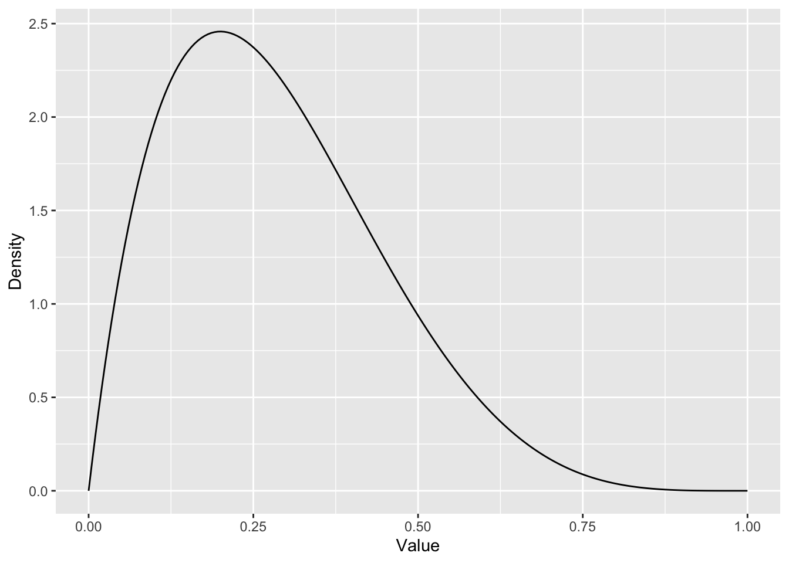
Dirichlet Distribution
Multivariate generalization of the Beta distribution. Models a vector of probabilities that sum to 1; parameterized by a concentration vector \(\boldsymbol{\alpha}\).
\[f(x_1,\ldots,x_k) = \frac{1}{B(\boldsymbol{\alpha})}\prod_{i=1}^k x_i^{\alpha_i - 1}\]
alpha <- c(2, 5, 3)
g <- rgamma(length(alpha), shape = alpha)
probs <- g / sum(g)
df <- data.frame(category = c("A", "B", "C"), probability = probs)
ggplot(df, aes(category, probability)) +
geom_col() + labs(x = "Category", y = "Probability")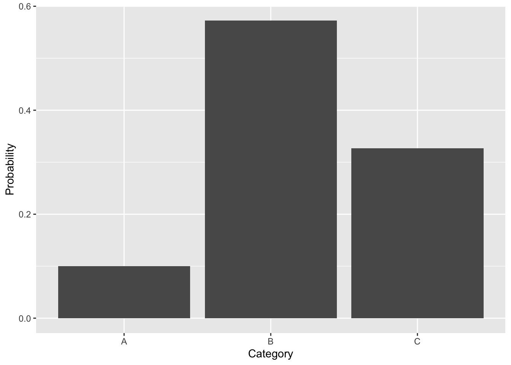
Chi-Squared Distribution
Sum of \(k\) squared independent standard normal variables. Used in hypothesis testing and goodness-of-fit tests.
\[f(x) = \frac{x^{k/2-1} e^{-x/2}}{2^{k/2}\,\Gamma(k/2)}\]
x <- seq(0, 20, length.out = 200)
df <- data.frame(x, y = dchisq(x, df = 5))
ggplot(df, aes(x, y)) + geom_line() + labs(x = "Value", y = "Density")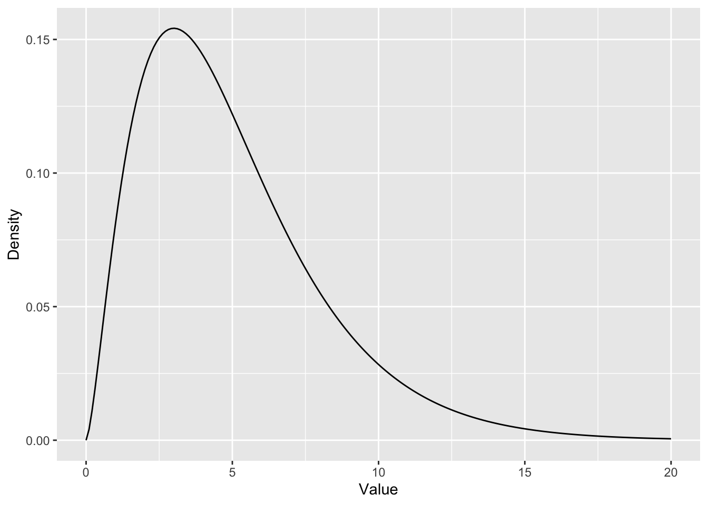
Logistic Distribution
Symmetric and bell-shaped like the normal, but with heavier tails. Its CDF is the logistic function, making it central to logistic regression.
\[f(x) = \frac{e^{-(x-\mu)/s}}{s\left(1+e^{-(x-\mu)/s}\right)^2}\]
x <- seq(-6, 6, length.out = 200)
df <- data.frame(x, y = dlogis(x, location = 0, scale = 1))
ggplot(df, aes(x, y)) + geom_line() + labs(x = "Value", y = "Density")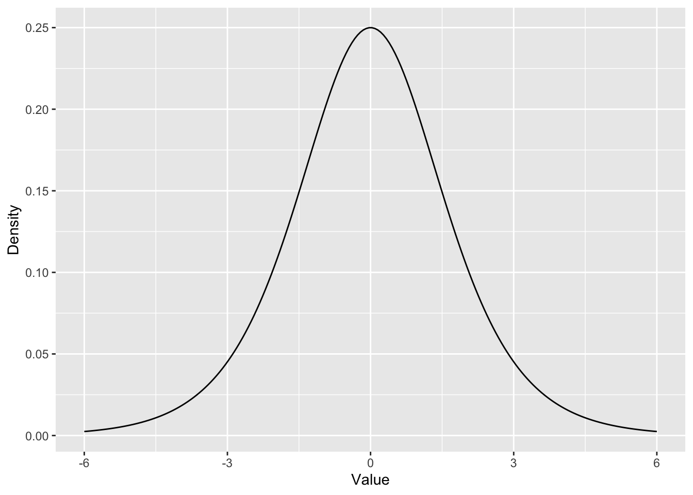
Gompertz Distribution
Models survival and mortality rates; hazard increases exponentially over time. Parameterized by shape \(\eta\) and rate \(b\).
\[f(x) = \eta b\, e^{bx} \exp\!\left(-\eta\left(e^{bx} - 1\right)\right)\]
x <- seq(0, 3, length.out = 200)
eta <- 1; b <- 2
y <- eta * b * exp(b * x) * exp(-eta * (exp(b * x) - 1))
df <- data.frame(x, y)
ggplot(df, aes(x, y)) + geom_line() + labs(x = "Time", y = "Density")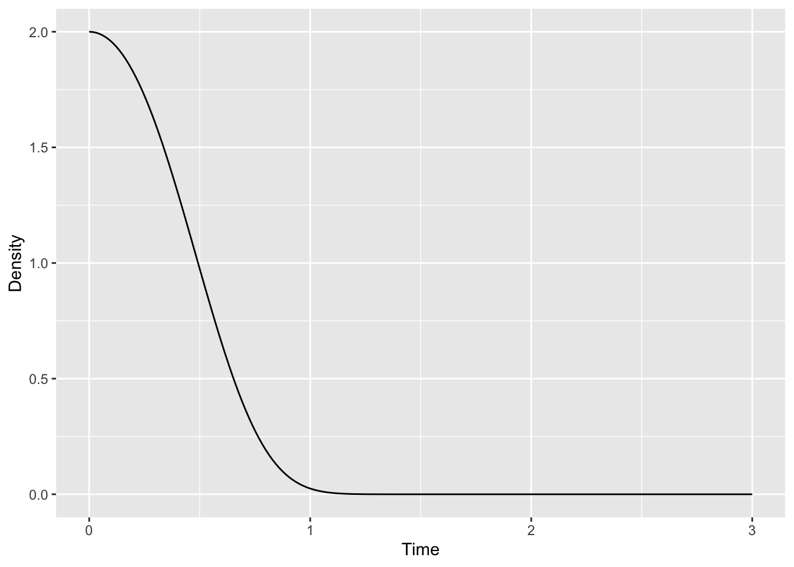
Models
Models embody all your assumptions about what you are studying.
What are the entities involved?
How are they related to each other? What affects what? in what way? What causes what?
Mathematics helps us be very precise about these.
Regression is a method of estimating the parameters of your model.